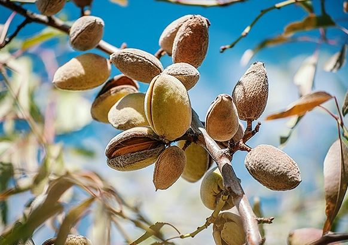
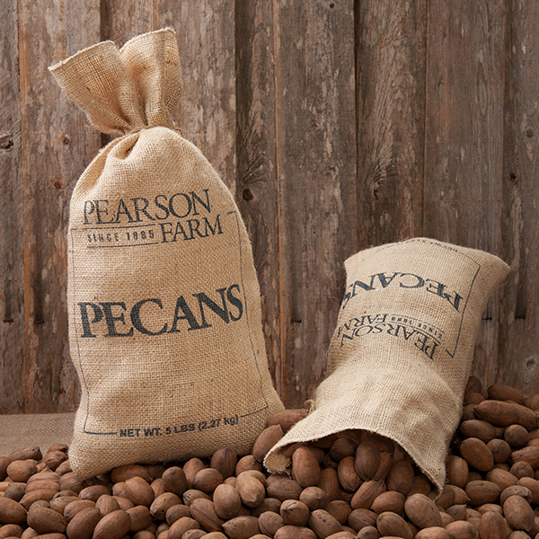
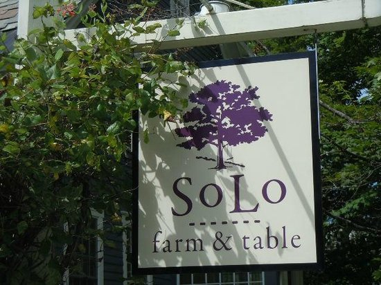
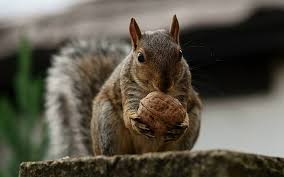
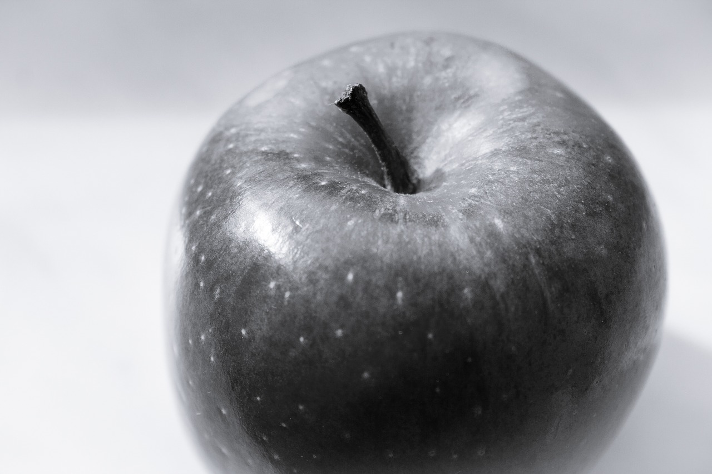

About:
The Annual OCF Market is an event that takes place once a year where farmers nationwide come to Farmerville to show off their products, represent their region, and provide knowledge to customers about where their food comes from. The first Market began in 1962 when April and Gary Livingstone invited all the local farmers to come together to trade produce. Slowly, the event grew and farmers from nearby regions came to Farmerville to display and share their produce. Today, the Annual OCF Market has it all, from small local farmers with years of knowledge to internationally renowned farmers who have made themselves a household name. If you are interested in hosting a stall in the next market, please go to http://www.nswfarmers.org.au/ to fill out the "host a stall" form and join us next year!
Award Winning Farms which will be present at our Farmer's Market
All the Almonds

Farm Description:
Based in NSW, the All the Almonds team produce the most almonds in the Southern Hemisphere for commerical and household use/consumption every year. Every almond tree is taken care of by our team of experienced team members, which is difficult work with over 3000 trees.He Can, She Can, Pecan!

Farm Description:
He Can, She Can, Pecan produce the greatest pecans for restuarants and households to use in cooking, or consume as a healthy snack. People are more then welcome to come visit the farm and see the work that goes into picking and packaging pecans.Loco Del Solo Farm

Farm Description:
Loco del Solo Farm takes tender care in producing the freshest fruits all year round.The Wacky Walnut

Farm Description:
Here at the Wacky Walnut, we believe in producing quality walnuts. So good in fact, that you will have a hard time putting them down because they will just be that delicious.Apple Garden

Farm Description:
Here at Apple Garden, we specialse in prducing the best and freshest apples for our customers all year round. We have over 1000 apple trees which are carefully cultivated by our team of apple farmers, taking care with every pick.